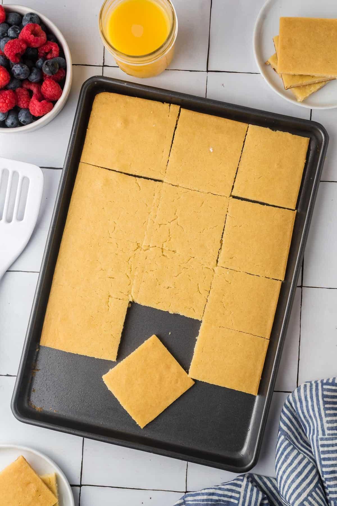

Sheet Pan Buttermilk Pancakes

Description:
Sheet pan pancakes are one of my favorite breakfast hacks for
busy mornings or breakfast meal prep. The buttermilk makes these
baked pancakes light, fluffy, and oh-so-delicious! This sheet pan
pancake recipe can be easily customized by adding your favorite
fruit or other pancake toppings on top of the batter before cooking.
Ingredients:
- cooking spray
- 3 cups baking mix (such as Bisquick®)
- 2 cups buttermilk
- 4 large eggs
- 1/4 cup granulated sugar
- 1/2 teaspoon vanilla extract
- 1/4 teaspoon ground cinnamon
Steps:
- Preheat the oven to 350 degrees F (175 degrees C). Line
a sheet pan (approx. 13 x18 inches) or jelly roll pan
(12x17 inches) with parchment paper. Spray the parchment
paper with cooking spray.
- Combine baking mix, buttermilk, eggs, sugar, vanilla
extract, and cinnamon in a large mixing bowl. Mix until
the ingredients are well combined, but don't overmix.
Pour batter onto the parchment paper-lined pan.
- Bake in the preheated oven until lightly golden, 15 to
18 minutes.
- Remove sheet pan from the oven. Lift the parchment paper
with the pancake from the pan and set it onto a cutting
board. Slice the pancake sheet into squares using a pizza
cutter or into your desired shapes with a cookie cutter.
Home |
Next >